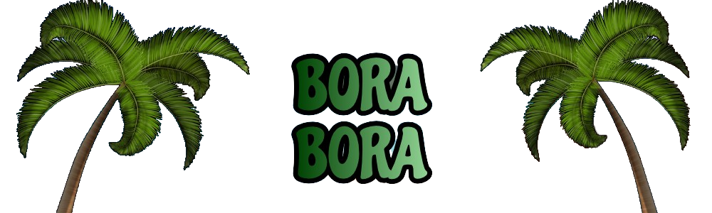
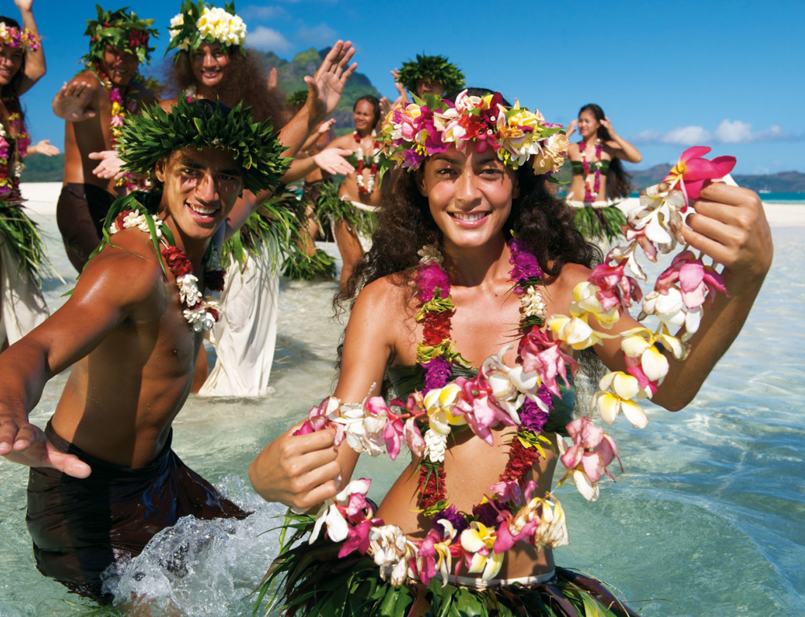
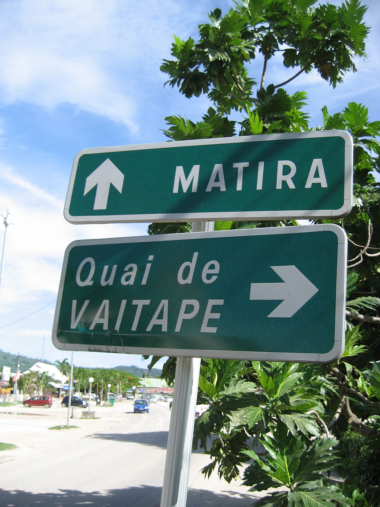
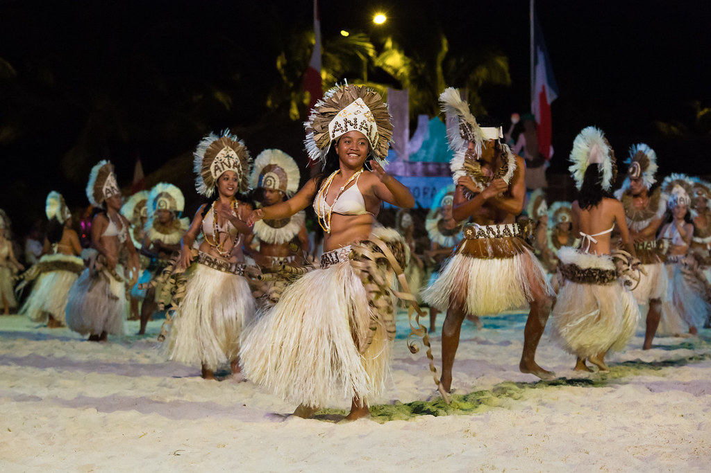

|

CultureBora Bora is a beautiful island in French Polynesia. The island is known for its stunning natural beauty, including its crystal clear waters, white sand beaches, and lush tropical vegetation. We already know that, but Bora Bora is also known for its rich cultural history and unique Polynesian culture. History and PeopleBora Bora, part of the Society Islands in French Polynesia, has a rich cultural history dating back to the 4th century. The island was first inhabited by Polynesian settlers, and it became an important center for the Polynesian seafaring culture. The people of Bora Bora are known for their warmth and hospitality, which makes the island an inviting destination for tourists. LanguageThe primary languages spoken in Bora Bora are Tahitian and French. Tahitian, an Austronesian language, is the indigenous language of the island. However, French is the official language of French Polynesia and is widely spoken throughout the region. Many locals also speak English, particularly in the tourism industry.  >Heiva FestivalHeiva is an annual cultural festival held in Bora Bora and other islands in French Polynesia. The event takes place in July and celebrates traditional Polynesian culture, arts, and sports. The festival features a wide range of activities, including traditional dance and music performances, canoe races, and traditional sports competitions.  > |